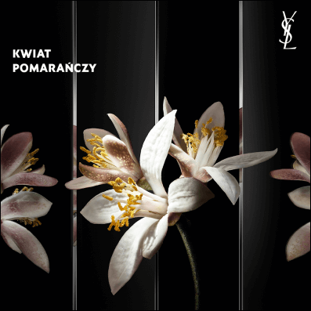
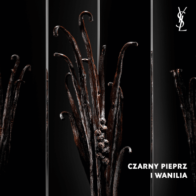
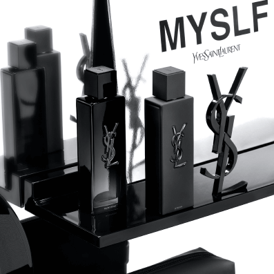

Poczuj żar jego nut:
Kremowa i słoneczna moc kwiatu białej Mandevilli
Pikantny aromat pustynnej lilii
Płomienna zmysłowość kwiatu pomarańczy
Wibrująca ekspresja lawendy
Bezkompromisowo kobiecy zapach o kwiatowej eksplozji, która wyzwoli Twoją wewnętrzną siłę.





